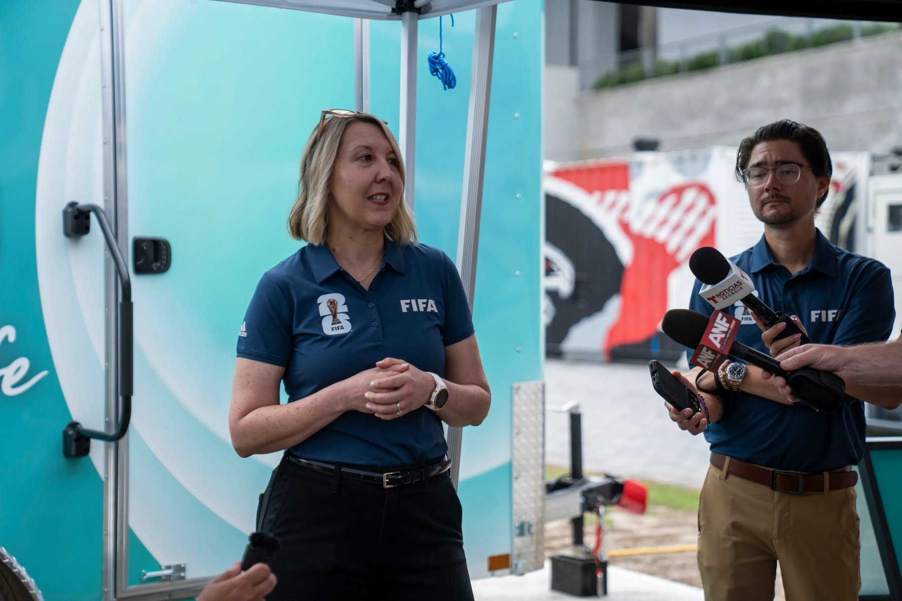
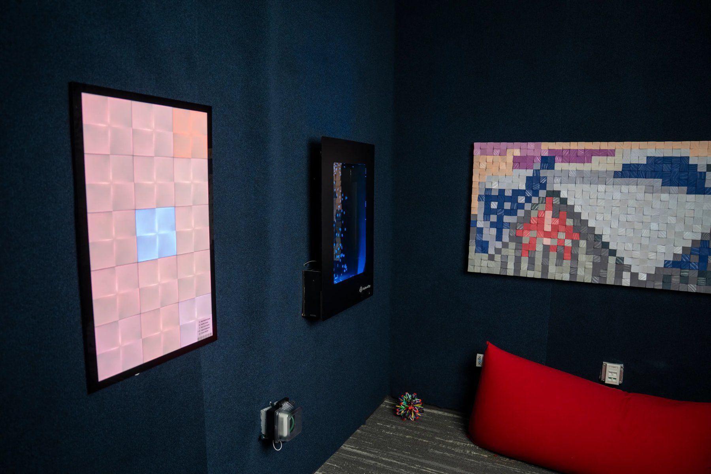
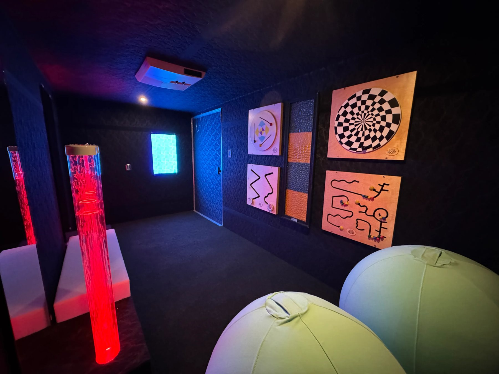

案例发生了什么

海信、FIFA 与 KultureCity 将“感官包容性”做成世界杯的具体服务：16 座球场、104 场比赛全覆盖感官空间，部分区域同时设置移动感官车，空间以低照度、降噪、柔软坐具、触觉资源和海信屏幕的舒缓视觉帮助感官敏感观众调节刺激。
它解决的策略问题
这页要回答的不是“海信 x FIFA：首个「感官包容性」赛事体验 是否参与世界杯”，而是它如何通过“官方赞助 / 无障碍与包容性服务”回应“把科技向善从公益口号落实到特殊感官需求人群的观赛体验”这一业务问题。
资源如何变成行动
官方赞助 / 无障碍与包容性服务
围绕“把科技向善从公益口号落实到特殊感官需求人群的观赛体验”配置球星、球队、授权、商品、渠道或海外服务，而不是只做单一海报。
根据品类落在门店、货架、礼赠、家庭观赛、出行或海外本地市场的具体触点。
通过收藏、复购、线索、渠道或交付案例，决定这项资源能否留下来。
动作拆解
- 与专业无障碍组织 KultureCity 共建服务标准，而不是由品牌单方定义用户需求。
- 让每座球场在比赛全时段都提供安静空间，并用移动车扩大赛场外的覆盖。
- 把海信显示技术用于舒缓视觉，从“画质参数”转为一个可被用户感知的公共服务。
- 海信还支持各主办城市的感官需求家庭获得免费观赛机会，将空间建设延伸到真实参与。
深度补充：从动作到复盘
以下字段用于把案例从“看过一个创意”推进到可执行、可衡量、可继续补证的研究对象。
把科技向善从公益口号落实到特殊感官需求人群的观赛体验
具有感官敏感需求的观众、家庭、场馆与公益伙伴
官方赞助 / 无障碍与包容性服务
场馆服务、安静空间、辅助物料、志愿者与公益传播
服务场次、使用人数、满意度、合作机构反馈与长期延续
包容性项目只有写清服务对象、使用方式和实际覆盖，才能从品牌态度成为公共价值。
补齐 海信 x FIFA：首个「感官包容性」赛事体验 的官方首帧、完整片、发布时间、市场范围与执行现场，并保留原始链接。
传播与业务机制
国际赛事提供公共话题，中国品牌需要用明确的本土产品语言或海外市场语言完成翻译。
低门槛商品、互动、内容或线下体验负责让泛球迷也有参与理由。
真正的回报通常发生在商品、渠道、服务或海外市场，而不只在国内声量。
需要品牌、渠道、法务、供应链与内容团队提前协调赛程和物料。
适用条件、风险与证据
- 先明确目标是国内动销、出海认知、渠道关系还是授权商品，而不是全部都做。
- 球星或球队的赛果只是放大器，必须准备常态内容和转化出口。
- 对授权范围、地域、肖像和商品库存建立可追溯台账。
品牌与权威来源物料
这里只展示可追溯到品牌、权利方、官方账号或明确注明原始出处的真实物料；研究图卡不计入案例图片。



官方资料、结果口径与下一步
已验证事实
- 海信与 FIFA 官方材料互相印证：2026 世界杯首次获得 KultureCity “感官包容性赛事”认证，16 座球场、104 场比赛均提供感官空间。
- 感官空间包含低照度、降噪、舒适坐具、触觉资源和播放舒缓视觉的海信屏幕；八座球场同时提供场内与 Stadium Fan Experience 区域的空间。
- 本页图片来自海信官方执行复盘与 FIFA 官方数字图库，展示移动感官车、人员说明和空间内部。
可追溯结果口径
- 现有官方资料给出“16 座球场 / 104 场比赛”的覆盖口径，尚未披露实际使用人次、平均停留、需求分布和用户满意度。
原始来源
- Hisense Global · 2026-05-22Hisense Partners with FIFA for First-Ever Sensory-Inclusive FIFA World Cup
- Hisense Global · 2026-07-16Finding Calm in the Roar
- FIFA · 2026-05-21FIFA World Cup 2026 earns first-ever Sensory Inclusive Tournament recognition
- FIFA · 2026-05-21Accessibility services at FIFA World Cup 2026
来源链接优先指向品牌、权利方或持权媒体官方页面；品牌自述数据按原口径记录，不视作独立审计结果。